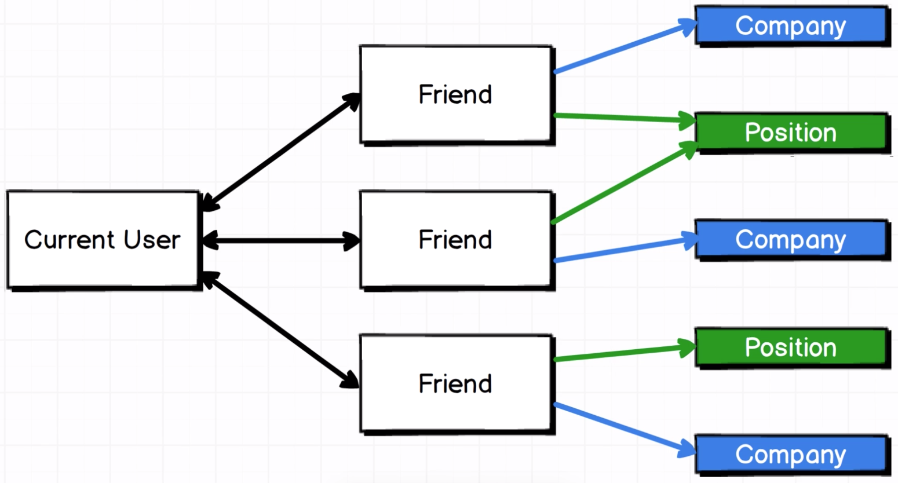
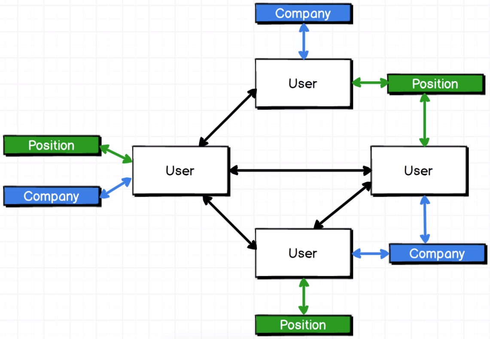
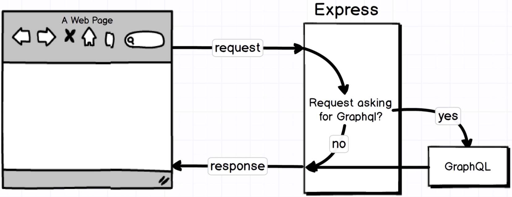
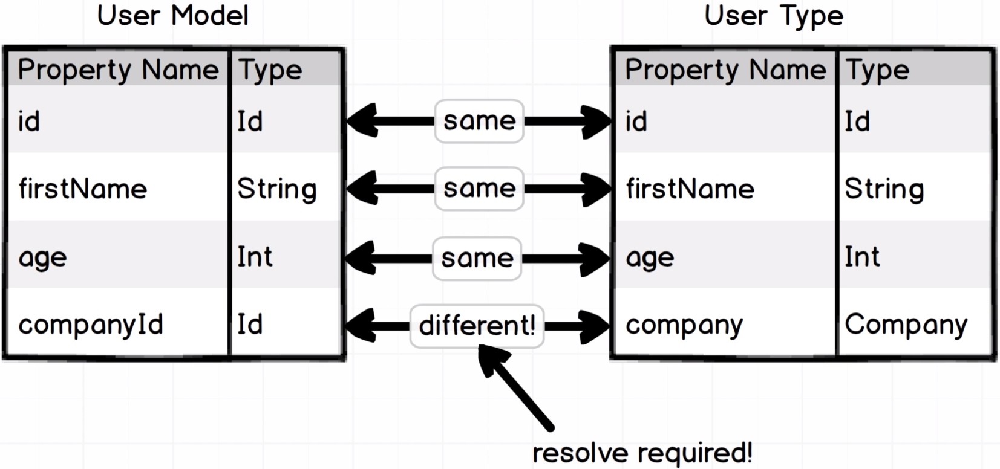
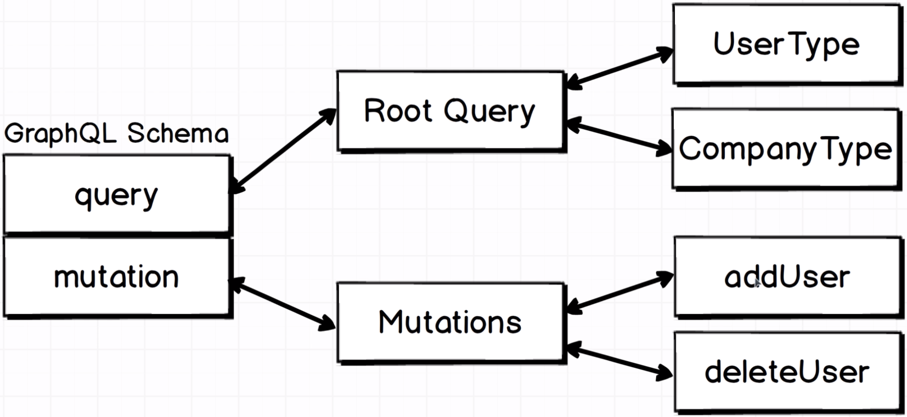
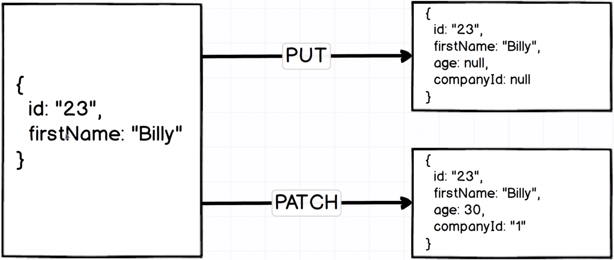

GraphQL with React: The Complete Developers Guide
Table of Contents
1 A RESTful Routing Primer
1.1 Shortcomings of RESTful Routing
RESTful routing conventions (URL schemas) become unhandy when working with highly relational data. E.g.
- A
userhas multiple friends (eachfriendis also auser). - Each
friendis associated with acompany.
To get a user's friends and their companies data, the routing patterns can be:
/users/:id/friendsand/users/:id/companies/users/:id/friends/companies/users/:id/friends_with_companies
The problems with these patterns:
- Multiple HTTP requests are needed to fetch all data.
- Endpoints are customized and tightly coupled with the use cases.
- Responses contain unknown structures or unnecessary data.
2 On to GraphQL
2.1 What is GraphQL?
Relational data like:

Can be considered as a graph like:

And GraphQL is the language used to write queries that work on such data graphs.
For example, to query a certain user's friends' company names from the graph above:
query {
user(id: "23") {
friends() {
company {
name
}
}
}
}
2.2 Working with GraphQL
A simple GraphQL app is composed of:
- GraphiQL: An in-browser IDE used to test the GraphQL server in development (shouldn't use in production).
- GraphQL server
- Database
Create the app and install dependencies:
mkdir users
cd users
npm init
npm install --save graphql express express-graphql lodash
2.3 Registering GraphQL with Express
High-level structure and logic of the simple Express app:

Entry point of the app:
const express = require('express'); const expressGraphQL = require('express-graphql'); const app = express(); app.use('/graphql', expressGraphQL({ graphiql: true })); app.listen(4000, () => { console.log('Listening'); });
2.4 GraphQL Schema
To work on a data graph, GraphQL requires data schema which specifies:
- data types and properties
- relations between the data types
const graphql = require('graphql'); const { GraphQLObjectType, GraphQLString, GraphQLInt } = graphql; const UserType = new GraphQLObjectType({ name: 'User', fields: { id: { type: GraphQLString }, name: { type: GraphQLString }, age: { type: GraphQLInt } } });
Schema needs to be imported into GraphQL app:
const schema = require('./schema/schema'); app.use('/graphql', expressGraphQL({ schema, graphiql: true }));
2.5 Root Query
Root query is the mapping from a query to the corresponding data type defined in schema. It specifies the query's entry point in the data graph, e.g. for a user query, the UserType data type is the entry point:
const RootQuery = new GraphQLObjectType({ name: 'RootQueryType', fields: { user: { // Query keyword type: UserType, // Query output args: { id: { type: GraphQLString } }, // Query input resolve(parentValue, args) { // Data lookup logic // Return user whose id == args.id } } } }); module.exports = new GraphQLSchema({ query: RootQuery });
GraphQL depends on resolve() to resolve the data types. resolve() essentially serves as link between:
- root query and the corresponding data type, and
- one data type and its relational data types
The resolving logic is normally RDB lookup using the input params.
2.6 GraphiQL Tool
Start the server:
node server.js
And open http://localhost:4000/graphql, the GraphiQL UI should be displayed. Run query:
{
user(id: "1") {
id, firstName, age
}
}
2.7 Realistic Data Source
To replace the hard-coded user data, json-server can be used to run a local HTTP server which serves configured JSON data.
2.8 Async Resolve Functions
To load data in async, wrap the request to local json-server in a promise, e.g. via axios.
2.9 Nodemon Hookup
To avoid restarting the Node server every time the code is change, use nodemon.
3 Fetching Data with Queries
3.1 Nested Queries
To declare relation between 2 data types, e.g. a user belonging to a company, update the schema:
const CompanyType = new GraphQLObjectType({ // Add data type name: 'Company', fields: () => ({ ... }) }); const UserType = new GraphQLObjectType({ name: 'User', fields: () => ({ ... company: { // Add data field type: CompanyType, resolve(parentValue, args) { // Return company whose id == parentValues.companyId } } }) });
Stored data of user:
{ "id": "", ..., "companyId": "" }
In other words, the company field of the data type is resolved with the companyId field of the data model:

The query to fetch user's company data:
{
user(id: "1") {
name
company {
name
}
}
}
3.2 Bidirectional Relations
One company has multiple user. To fetch all user belonging to a company, add data field (which is a list of user) and resolving logic:
const CompanyType = new GraphQLObjectType({ name: 'Company', fields: { ... users: { type: new GraphQLList(UserType), resolve(parentValue, args) { // Return all users whose companyId == parentValue.id } } } });
3.3 Query Fragments
3.3.1 Query Names
Queries can be named, so that it can be reused:
query findCompnay { company(id: "1") { ... } }
3.3.2 Query Field Names
When querying the same data type multiple times, each field needs to be named:
{
first: company(id: "1") { ... }
second: company(id: "2") { ... }
}
The result:
{
"data": {
"first": { ... },
"second": { ... }
}
}
3.3.3 Query Fragments
Query fragments are lists of fields that can be reused between queries. E.g. instead of:
{
company(id: "1") {
id
name
description
}
}
By using query fragments, it becomes:
fragment companyDetails on Company { id name description } { company(id: "1") { ...companyDetails } }
3.4 Introduction to Mutations
GraphQL mutations are used to represent modifications (in contrast to reading) to the data.

Similar to root query, mutation is defined as an object and attached to the schema object:
const mutation = new GraphQLObjectType({ name: 'Mutation', fields: { addUser: { type: UserType, args: { firstName: { type: GraphQLString }, ... }, resolve(parentValue, { firstName, age, companyId }) { // Create user using input params, and return the created object } } } }); module.exports = new GraphQLSchema({ mutation, query: RootQuery });
GraphQL mutation syntax:
mutation {
addUser(firstName: "", ...) { # Input params
id # Output fields
firstName
...
}
}
3.5 Edit Mutation
Difference between these methods:
POST |
Create a new record |
|---|---|
PUT |
Replace an existing record |
PATCH |
Partially update an existing record |
